Lewis Hamilton
Ferrari
Season position: 6th
Season points: 156
Formula 1 is the pinnacle of global motorsport, combining cutting-edge engineering,
elite driver skill, and relentless competition. Since its
inception in 1950, the sport has evolved into one of the most technologically
advanced and widely followed championships in the world.
Each Formula 1 car is a masterpiece of innovation, designed to maximize
aerodynamic efficiency, mechanical grip, and raw performance. Teams invest
millions into research and development, constantly pushing the boundaries of
what is physically possible on four wheels.
Beyond speed, Formula 1 is defined by its history, rivalries, and global
reach. Legendary drivers, iconic teams, and historic circuits have shaped
decades of unforgettable moments, while modern regulations continue to
prioritize safety, sustainability, and closer racing.
Today, Formula 1 represents more than just racing — it is a fusion of
science, strategy, and human determination, captivating millions of fans
around the world each season.
Ferrari
Season position: 6th
Season points: 156

Mercedes
Season position: 4th
Season points: 319

McLaren
Season position: 1st
Season points: 423

Red Bull Racing
Season positon: 2nd
Season points: 421

Mercedes
Season position: 7th
Season points: 150

Williams
Season position: 8th
Season points: 64

Ferrari
Season position: 5th
Season points: 242

Haas F1 Team
Season position: 15th
Season points: 38
Formula 1 began in 1950 as the world's premier single-seater racing championship, bringing together manufacturers, engineers, and drivers in pursuit of ultimate speed. From its earliest days, the sport represented a fusion of human bravery and mechanical innovation, raced on both permanent circuits and public roads.
The 1960s and 1970s marked a period of rapid evolution. Rear-engine designs, aerodynamic wings, and advances in chassis construction transformed how cars performed and how drivers approached racing. Safety, once secondary, became an increasingly important focus following a series of tragic accidents.
The turbo era of the 1980s pushed engineering to extremes, producing cars with extraordinary power. This was followed by an era of refinement, reliability, and dominance by teams that mastered consistency and precision.
In the modern age, Formula 1 stands at the forefront of technology. Hybrid power units, advanced aerodynamics, and data-driven development define competition, while the sport continues to balance innovation with sustainability and safety.
Across decades, Formula 1 has remained more than a championship — it is a constantly evolving story of rivalry, progress, and the relentless pursuit of performance.

Mercedes' modern F1 revival started with the creation of a works squad for 2010 - the platform for a meteoric rise up the Grand Prix order. The team generated huge excitement from the off with the sensational return of Michael Schumacher, but headlines soon followed on track: three podiums in their debut season, all via Nico Rosberg - who then claimed a breakthrough pole/victory double at China in 2012.

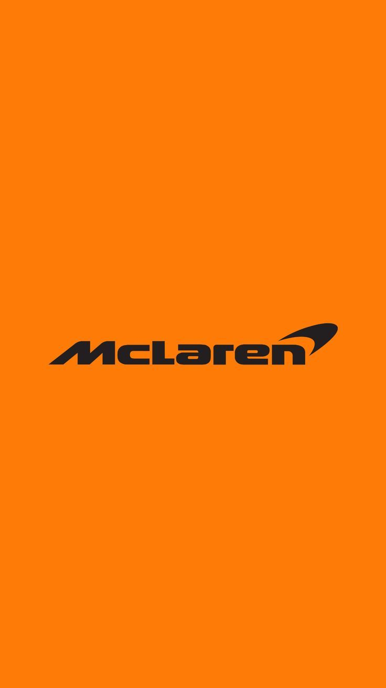
Since entering the sport in 1966 under the guidance and restless endeavour of eponymous founder Bruce, McLaren's success has been nothing short of breathtaking. Five glittering decades have yielded countless victories, pole positions and podiums, not to mention nine constructors' championships. What's more, some of the sport's greatest drivers made their names with the team, including Emerson Fittipaldi, Ayrton Senna, Mika Hakkinen and Lewis Hamilton.

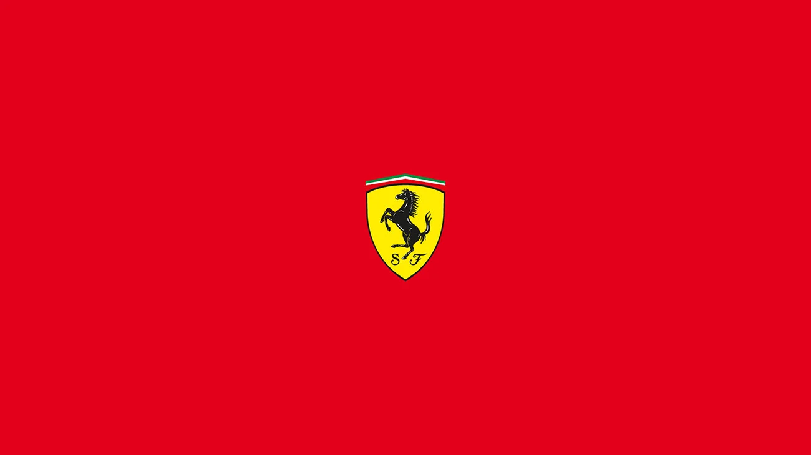
For many, Ferrari and Formula 1 racing have become inseparable. The only team to have competed in every season since the world championship began, the Prancing Horse has grown from the humble dream of founder Enzo Ferrari to become one of the most iconic and recognised brands in the world.

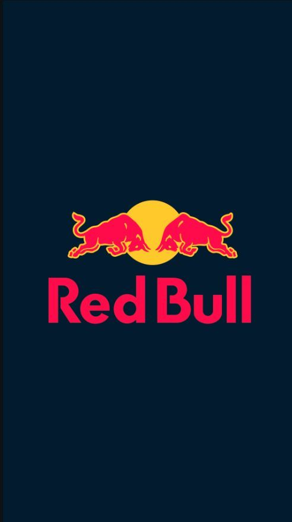
Red Bull were no strangers to F1 - as sponsors - prior to formally entering as a works team in 2004. Nonetheless, the scale of their success over the following decade was staggering. After a first podium in 2006, the team hit their stride in 2009, claiming six victories and second in the constructors' standings. Over the next four seasons they were a tour de force, claiming consecutive title doubles between 2010 and 2013, with Sebastian Vettel emerging as the sport's youngest quadruple champion.

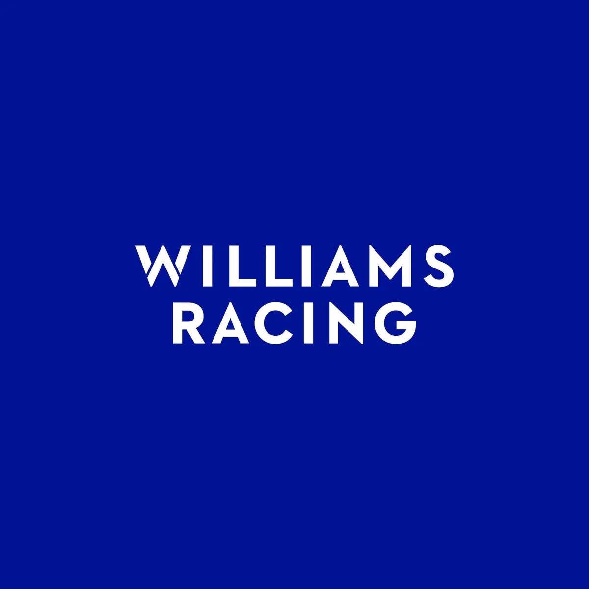
Driven on by the brilliance and passion of the late Sir Frank Williams, Williams grew from humble beginnings to become a Formula 1 behemoth, unrivalled by all except Ferrari and McLaren in terms of enduring success. Over the past four decades the team has racked up Grand Prix wins and championship glory, and in the process nurtured some of the greatest talents in the sport, both in and out the cockpit. And, following the Williams family's decision to step aside after the 2020 sale of the team to Dorilton Capital, a new era has begun.

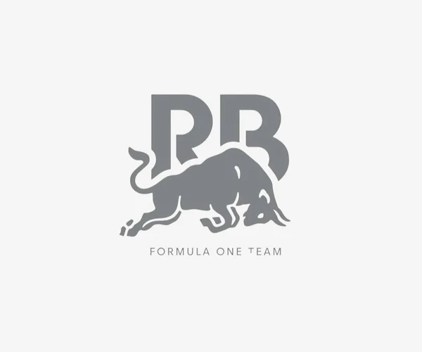
Established in 2006 as a squad in which young drivers from Red Bull's prodigious talent pool could cut their F1 teeth, Racing Bulls - originally named Toro Rosso, then AlphaTauri, then RB - were formed from the ashes of the plucky Minardi team.
Modern, technical circuit with dramatic elevation changes.
High-speed straights combined with flowing corners
Tight street circuit demanding precision and control
Historic track known for its complexity and challenge.
The Temple of Speed with iconic long straights
Famous for the dramatic Corkscrew corner
Unique figure-eight layout testing driver skill
Fast, flowing circuit with iconic Eau Rouge
| GRAND PRIX | DATE | WINNER | TEAM | LAPS | TIME |
|---|---|---|---|---|---|
| Australia | 16 Mar | Lando Norris | McLaren | 57 | 1:42:06.304 |
| China | 23 Mar | Oscar Piastri | McLaren | 56 | 1:30:55.026 |
 Japan Japan
|
06 Apr | Max Verstappen | Redbull Racing | 53 | 1:22:06.983 |
| Bahrain | 13 Apr | Oscar Piastri | McLaren | 57 | 1:35:39.435 |
| Saudi Arabia | 20 Apr | Oscar Piastri | McLaren | 50 | 1:21:06.758 |
| Monaco | 25 May | Lando Norris | McLaren | 78 | 1:40:33.843 |
| Spain | 01 Jun | Oscar Piastri | McLaren | 66 | 1:32:57.375 |
 Canada Canada
|
15 Jun | George Russell | Mercedes | 70 | 1:31:52.688 |
| Austria | 29 Jun | Lando Norris | McLaren | 70 | 1:23:47.693 |
 Great Britain Great Britain
|
06 Jul | Lando Norris | McLaren | 52 | 1:37:15.735 |
 Italy Italy
|
07 Sep | Max Verstappen | Redbull Racing | 53 | 1:13:24.325 |
| Singapore | 05 Oct | George Russell | Mercedes | 62 | 1:40:22.367 |
|
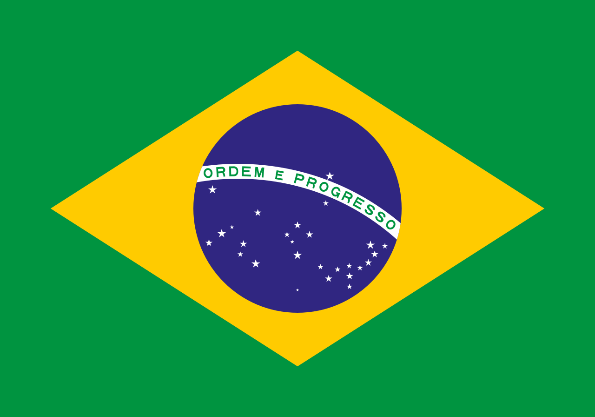 Brazil |
09 Nov | Lando Norris | McLaren | 71 | 1:37:58.574 |

The first ever Formula 1 World Champion came from a privileged background and had a stylish driving technique that was adopted by many drivers. A hard and determined racer, Farina relied on a combination of profound self belief and raw courage to compensate for the superior skills possessed by many of his more naturally talented opponents. Yet he also drove recklessly and few Formula 1 drivers ever competed with such apparent disregard for their personal safety. Somehow surviving an accident-strewn racing career, he was eventually killed in a road accident.
Giuseppe Antonio 'Nino' Farina was always destined to be involved in the automotive world, though not necessarily as a driver. On the day of his son's birth, October 30, 1906, Nino's father Giovanni established Stabilimente Farina, a bodywork shop in Turin, the industrial city where much of Italy's car manufacturing industry was located. Here also, Giovanni's brother founded the coachbuilding firm of Pininfarina, later famed for designing many sleek Italian sportscars. From an early age Nino was expected to join the family business but his first driving experience, at the age of nine in a small car on the grounds of his father's factory, whetted his appetite for the sporting side of motoring. When he was 16 Nino accompanied his favourite uncle Pinin as a passenger in a race. Three years later his first solo competition ended in an accident, establishing a worrying trend that continued throughout his crash-prone career.

Many consider him to be the greatest driver of all time. In seven full Formula 1 seasons (he missed one recovering from a nearly fatal injury) he was World Champion five times (with four different teams) and runner-up twice. In his 51 championship Grands Prix he started from the front row 48 times (including 29 pole positions) and set 23 fastest race laps en route to 35 podium finishes, 24 of them victories. His superlative track record was achieved by some of the greatest displays of skill and daring ever seen. Fangio did it all with style, grace, nobility and a sense of honour never seen before or since.
Fangio flourished in Formula 1 racing when the world championship was in its infancy and he was a comparatively 'Old Man' - which is what his admiring rivals called the aging genius who won his last driving title in 1957, when he was 46. Most of his challengers were young enough to be his sons, and nearly all of them came from privileged backgrounds far removed from Fangio's humble origins in a remote corner of Argentina, in the dusty frontier town of Balcarce. His father and mother, hard-working immigrants from the Abruzzi region of Italy to whom Fangio was deeply devoted, raised their six children (three boys and three girls) to believe in God and the dignity of labour. Fangio credited his parents with instilling in him the virtues of honesty and integrity, self-discipline, respect for others and the sense of responsibility that characterized his approach to life.

The son of one of Italy's great pre-war drivers, Alberto Ascari went on to become one of Formula 1 racing's most dominant and best-loved champions. Noted for the careful precision and finely-judged accuracy that made him one of the safest drivers in a most dangerous era, he was also notoriously superstitious and took great pains to avoid tempting fate. But his unexplained fatal accident - at exactly the same age as his father's, on the same day of the month and in eerily similar circumstances - remains one of Formula 1 racing's great unsolved mysteries.
Alberto Ascari, born in Milan on July 13, 1918, was just seven years old when his famous father Antonio, the reigning European champion, was killed while leading the French Grand Prix at Montlhery. By that time little Alberto was already immersed in his father's milieu, having met the many big names in racing, including Antonio's close friend Enzo Ferrari, who frequented the thriving Ascari Fiat dealership in Milan. Despite the tragic loss of his beloved father Alberto succumbed to the lure of racing. His famous name helped get him started, though it was on two wheels, not four, when, as a 19-year-old he was hired to ride for the Bianchi motorcycle team. His first four-wheel foray came in the 1940 Mille Miglia, where Enzo Ferrari gave him a ride in a Tipo 815 Spyder. When Italy entered World War II the Ascari garage in Milan, now run by Alberto, was conscripted to service and maintain military vehicles. During the war years he also established a transport business, supplying fuel to Italian army depots in North Africa. His partner in this enterprise was Luigi Villoresi, a racing driver with whom he developed a father-son relationship. By the end of the war Alberto was a family man, having married Mietta and become the father of Patrizia and Antonio, who was named after his celebrated grandfather.

The first American to become World Champion had a love/hate relationship with the sport. Profoundly intelligent and deeply sensitive, he was also remarkably candid about personal demons that caused inner turmoil and made his racing life a bittersweet experience. He was always fearful and throughout his career he struggled to find a balance between the perils and pleasures of his profession. Yet driving became a way of expressing himself and racing took him on a journey to places he never expected to go.
Philip Toll Hill, Jr was born into a prominent family in Miami, Florida, on April 20, 1927. Not particularly close to his parents, he became an introverted child with an inferiority complex and few friends. Not good at sports, he feared failure and ridicule and was consumed by feelings of inadequacy. Music became an outlet and he learned to play the piano, then became fascinated by cars. When he was 12 his favourite aunt bought him a Model T Ford, which he took apart many times to understand how it worked, and his aunt's chauffeur taught him how to drive. His burgeoning automotive skills gave him increasing self-confidence, though he still felt aimless and socially awkward.

Famed as the only World Champion on both two and four wheels, John Surtees rode motorcycles and drove Formula 1 cars with equal skill and bravery. He made the leap from bikes to cars with surprising ease, though his quick climb to the pinnacle of motorsport was also the result of a great deal of hard effort by a serious-minded driver whose fierce independence ultimately proved to be a handicap. Having won the driving title at Ferrari, he left after a violent argument and was thereafter ill-equipped to win consistently.
His family background gave John Surtees a head start on motorcycles. His father Jack, who owned a motorcycle shop in South London, was a three-time British motorcycle sidecar champion. The eldest of three children, John was born on February 11, 1934, and by the time he was 11 he had a bike of his own and could ride and repair it with equal skill. At 16 he left school and became an apprentice engineer at the Vincent motorcycle factory. A year later he competed in his first solo race and won it. In 1955 he became a member of the Norton works team and rode to victory 68 times in 76 races. From 1956 to 1960 he raced 350cc and 500cc bikes for the famed Italian MV Agusta team and won seven world championships.

His outstanding track record still ranks him among the most successful champions, yet in terms of personally influencing the way Formula 1 racing developed Jackie Stewart stands alone. His one-man safety crusade made the sport much safer. His excellent communication skills helped make it more popular. He set new standards of professionalism for drivers and was also a pioneer in exploiting Formula 1 racing's commercial potential. His keen intelligence and tireless energy helped, but he would never have been able to exert such influence had he not been a truly great driver.
John Young 'Jackie' Stewart was born in Dumbartonshire, Scotland, on June 11, 1939. His father owned a garage business and Jackie's older brother Jimmy was the first in the family to try racing, though his mother disapproved. There were also fears about Jackie's future because he was a failure at school and left at 15. Only later was he diagnosed as suffering from severe dyslexia - which made his subsequent achievements even more remarkable. While still a teenager he took up clay pigeon shooting and became one of the best shots in Britain. When he began racing saloons and sportscars he quickly showed outstanding talent that prompted team entrant Ken Tyrrell to hire him to contest the 1963 British Formula 3 series, in which the speedy Scot won seven races in a row.

A straight-talking, iron-willed, hard-driving tough guy, Alan Jones fought his way to the forefront, where he defended his territory with ruthless determination and large doses of intimidation. His belligerence was partly a by-product of a long and hard struggle to make it to Formula 1 racing in the first place. Once there, he was considered little more than a journeyman driver, until he teamed up with the then equally undistinguished Williams team. Together, they took on the world and beat it, with AJ becoming the prototypical Williams driver.
His father Stan Jones, an affluent car dealer, was one of Australia's top racers who in the mid-1950s was good enough to be offered tryouts in Europe (with BRM and Ferrari) but declined them in order to stay home and look after his business and his family. Alan Stanley Jones, born in Melbourne on November 2, 1946, was inspired by his father's successes and encouraged by him to have a go himself. At 15 he was a kart racing champion and soon also went well in a Mini and in one of his father's single-seater Coopers. Further progress was delayed when Stan Jones went bankrupt in an Australian economic recession. In 1967 Alan managed to scrape together enough cash to finance a traditional Australian tour of England and Europe. During this trip he decided that any future in motorsport would have to be pursued abroad.

He was never a dominant driver but a crafty expert in winning by stealth, according to his detractors. He admitted he was lazy, yet willingly worked hard to improve his car. He could be cold and cruel but could also be warm and funny. He hated being a celebrity yet lived the life of a playboy to the hilt. He was never hugely popular but couldn't care less. All Nelson Piquet really cared about was driving a racing car, which he loved with a passion, especially when he won, which he did often enough to become a triple World Champion.
Born Nelson Sautomaior, on August 17, 1952, he used his mother's surname Piquet to hide his early racing adventures from his disapproving parents. His father, a prominent Brazilian government minister, had been a regional tennis champion and when Nelson showed early promise in that sport he was encouraged to pursue it. At 12 he was one of Brazil's most promising junior prospects. At 16, to further hone his tennis skills, his parents enrolled him at a school in California. But whacking a ball around a tennis court began to take second place in Nelson's mind to driving a car around a race track, particularly when his countryman Emerson Fittipaldi started making inroads abroad. And so Nelson Piquet began racing in his home state of Brazilia. Winning championships in karts and sportscars failed to win over his parents, who sought to distract him by sending him to university. But studying philosophy, engineering and management proved no substitute for the lure of racing and Nelson dropped out after a year. He sold his road car to buy a Formula Vee and in 1977 became the Brazilian champion in that category.